Single Board Computer
In dit project ontwierpen en realiseerden we een gedistribueerd
IoT-systeem dat in staat is om de lichtintensiteit in drie
verschillende ruimtes te meten. Hiervoor maakten we gebruik van
LDR-sensoren gekoppeld aan een Arduino, die verantwoordelijk is voor
het periodiek inlezen van de analoge lichtwaarden. Deze meetgegevens
worden vervolgens via I²C-communicatie doorgestuurd naar een
centrale Raspberry Pi, die fungeert als gegevensverzamelpunt en
MQTT-broker.
Het systeem bestaat uit drie Raspberry Pi’s, elk met een eigen rol:
één Pi ontvangt en verspreidt de data via MQTT, een tweede
visualiseert de lichtgegevens op een dashboard, en een derde
analyseert de gegevens om een LED aan te sturen op basis van het
waargenomen lichtniveau. Deze modulaire opzet laat toe om elk
onderdeel afzonderlijk te ontwikkelen, testen en verbeteren.
Het doel van dit project is om inzicht te verwerven in real-time
dataverwerking binnen een IoT-omgeving, waarbij verschillende
componenten met elkaar communiceren via gestandaardiseerde
protocollen. Daarnaast willen we aantonen hoe meetdata automatisch
kunnen leiden tot actie — in dit geval de aansturing van een LED op
basis van de lichtsterkte. Het project combineert hardware- en
softwareaspecten en vormt een mooie praktijkoefening in het
ontwerpen van een werkend en uitbreidbaar IoT-systeem.
Doelstelling van het project
- - Licht meten met meerdere LDR-sensoren.
- - Waarden verzenden van Arduino naar Raspberry Pi’s via I²C.
- - Real-time communicatie opzetten via MQTT.
- - Dashboard bouwen dat live data visualiseert.
- - Automatische LED-aansturing implementeren afhankelijk van lichtniveau.
Systeemarchitectuur
Componenten:
- - 3x Arduino Nano
- - 3x Raspberry Pi (Broker, Dashboard, Actuator)
- - 3x LDR-sensoren
- - LED op GPIO 18
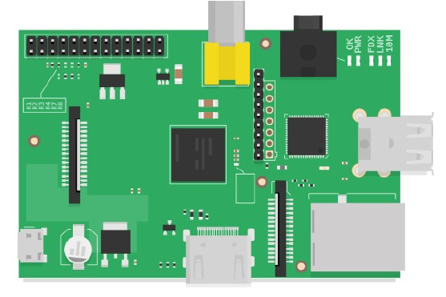
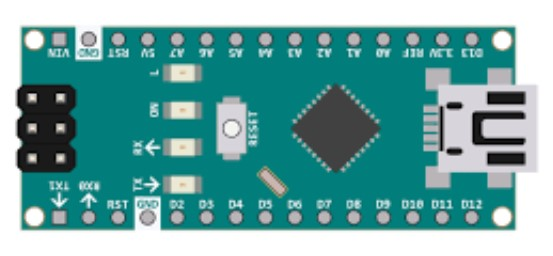
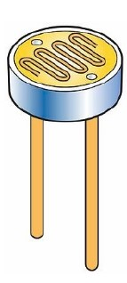
Datastroom: LDR (Arduino) → I²C → Pi A (Broker) → MQTT → Pi B (Dashboard) & Pi C (LED)
State diagram
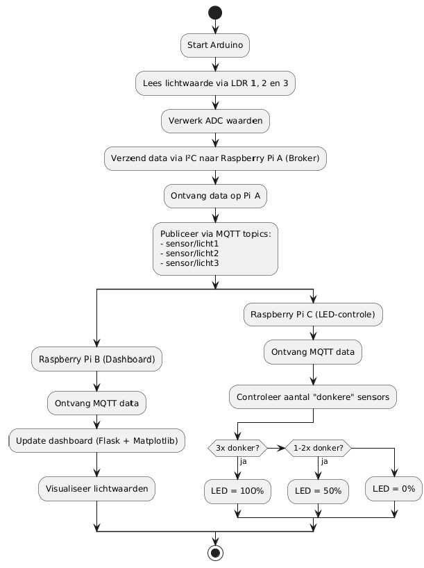
Gebruikte hardware
| Component | Aantal | Functie |
|---|---|---|
| Arduino Nano | 3 | Uitlezen LDR |
| LDR-sensoren | 3 | Lichtmeting per ruimte |
| Raspberry Pi | 3 | Broker, dashboard, LED |
| LED | 1 | Actuatie op basis van licht |
| Weerstanden | 3 | Voltage-deler met LDR |
Gebruikte software
- - Talen: C++ (Arduino), Python (MQTT + dashboard), HTML/CSS/JS (Chart.js)
- - Libraries: paho-mqtt, smbus, gpiozero, Flask, Chart.js
- - Tools: Visual Studio Code, Thonny, VNC, RealVNC, SSH
Communicatiestroom
- Arduino meet licht via LDR.
- Data wordt verzonden via I²C naar Pi A.
- Pi A publiceert waarden op MQTT-topic "sensors/ldr/all".
- Pi B leest deze waarden in en toont ze in een dashboard via Flask + Chart.js.
- Pi C gebruikt deze MQTT-data om een LED aan te sturen op basis van de hoeveelheid donkerte:
- - 3x donker: LED 100% (aan)
- - 1–2x donker: LED 50%
- - 0x donker: LED 0% (uit)
Technische uitdagingen en oplossingen
| Component | Aantal |
|---|---|
| Wi-Fi verbinden met schoolnetwerk | `wpa_supplicant.conf` correct geconfigureerd en of sd kaart flashen |
| I²C-data te kort | Correcte byteopbouw gebruikt (high + low byte) |
| Dashboard synchronisatie | `deque(maxlen=180)` buffers gebruikt |
| LED flikkert | PWM-waarden netjes beperkt via `gpiozero.PWMLED` |
| MQTT latency | Gebalanceerd door 1 Hz updatefrequentie |
Hardware bedrading
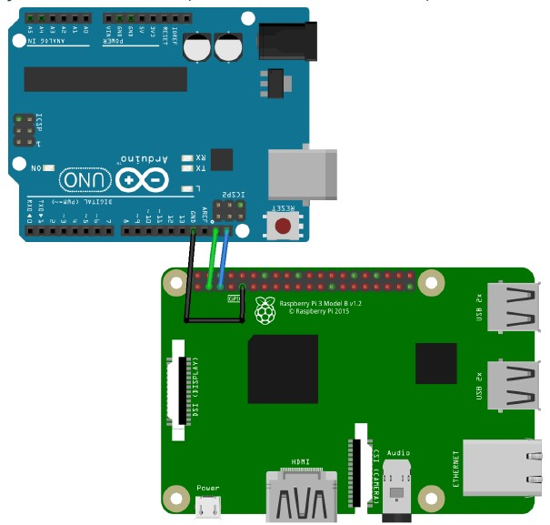
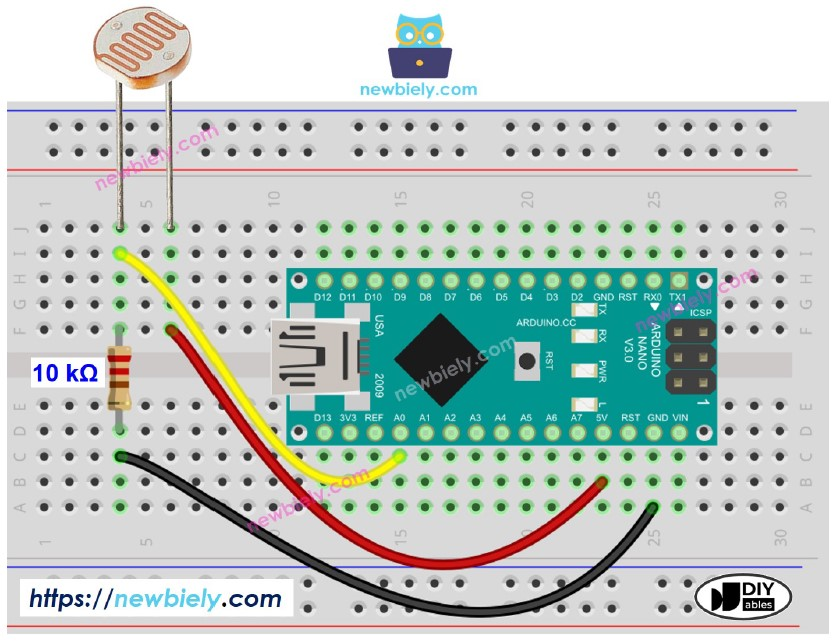
Screenshots en visualisaties
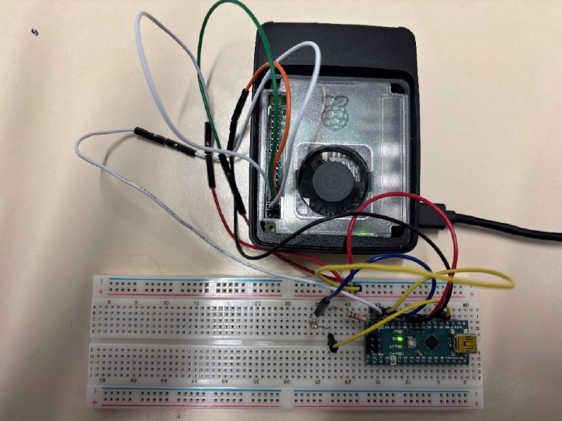
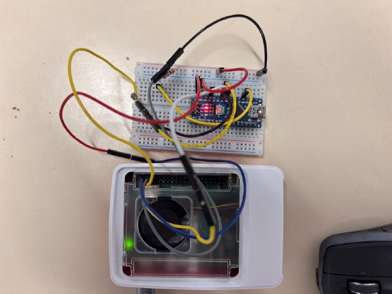
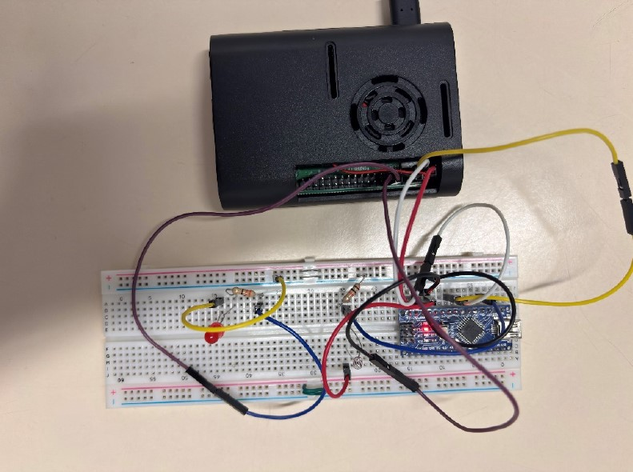
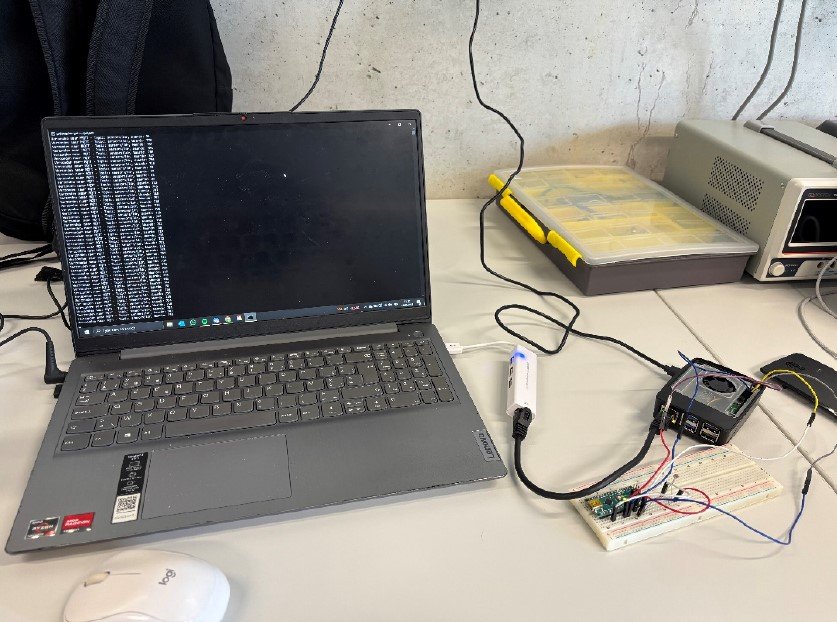
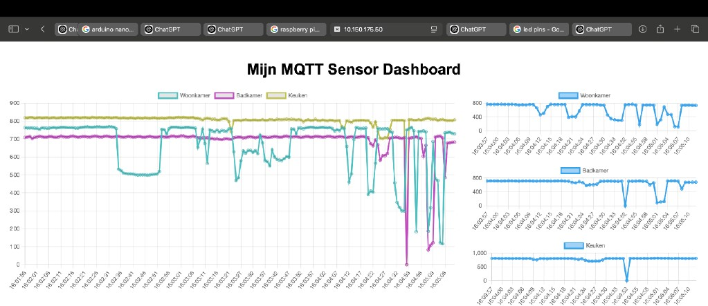
Conclusie en reflectie
Tijdens dit project hebben we een functioneel en modulair
IoT-systeem ontwikkeld waarbij elke student verantwoordelijk was
voor een specifiek technisch onderdeel. Dankzij deze duidelijke
taakverdeling konden we efficiënt samenwerken en het project
stapsgewijs en gestructureerd opbouwen. De combinatie van real-time
communicatie en afzonderlijke subsystemen zorgde ervoor dat het
geheel soepel samenwerkte.
De groepssamenwerking verliep bijzonder goed. We overlegden
regelmatig over de voortgang en verdeelden de taken in onderling
overleg. Wanneer iemand vastliep, stonden de anderen altijd klaar om
mee naar oplossingen te zoeken. Ook het bijhouden van een digitaal
logboek hielp ons om overzicht te houden en de communicatie
transparant te houden. Dit zorgde voor rust, overzicht en een
efficiënte workflow binnen de groep.
Het project bood ons de kans om niet alleen aan de slag te gaan met
sensoruitlezing en datacommunicatie, maar ook met datavisualisatie
en automatisering. We leerden hoe we meetgegevens konden omzetten in
concrete acties, zoals de aansturing van een LED op basis van
lichtwaarden. Daarnaast deden we praktijkervaring op met seriële
communicatie, I²C, MQTT, Python-programmering, Flask-dashboards en
GPIO-actuatie.
Tot slot kijken we terug op een leerrijk traject waarin
samenwerking, technische kennis en probleemoplossend denken centraal
stonden.
Video
Video waar we testen